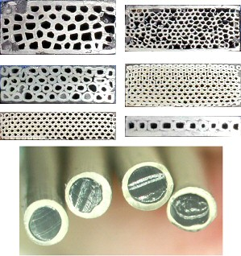
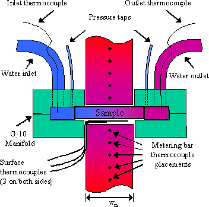
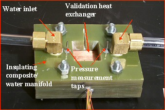
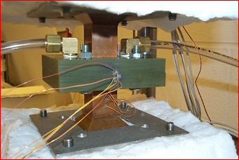
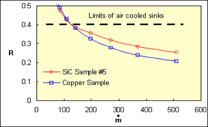
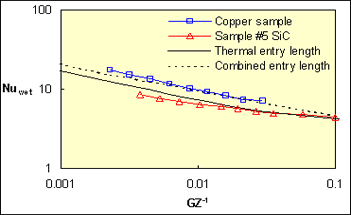
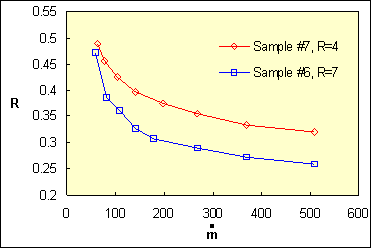
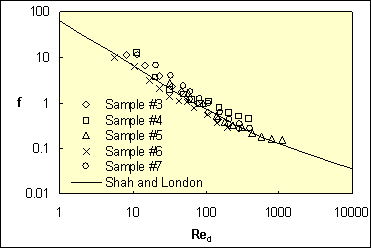

|
With the ever-increasing amounts of power being dissipated by ever
smaller electronic devices, comes the challenge of providing adequate
cooling to maintain component temperature with its use range. In many
applications, air-cooling technologies are proving inadequate to meet
this task. For this reason, liquid cooling strategies have become hot
topics for research. Liquids such as water allow for far greater heat
transfer owing to their much higher thermal conductivity and specific
heat. While this can lead to more efficient cooling, designing heat
exchangers for use with liquids raises a host of design challenges.
Issues such as, channel geometry, number of channels, and their
spacing, has far reaching implications on the thermodynamic and
hydrodynamic performance of a heat sink.  Figure 1. Finished SiC heat exchangers and pre- sintering feedstock.
At
larger scales, metals such as copper and aluminum are materials of
choice for fabrication of liquid cooled heat exchangers, owing to their
excellent thermal conductivity. It is however a challenge to form
compact milli and micro-scale heat exchanger from metals. In addition,
metals exhibit coefficients of thermal expansion much larger than that
of silicon, the material comprising high heat dissipating microchips.
This can form large stresses on the microchip, and may lead to
premature failure. The silicon carbide heat exchangers seen in fig. 1.,
employ a unique combination of materials and manufacturing designed to
alleviate both problems. These heat exchangers were constructed by
sintering together a number of co-extruded SiC tubes to form a larger
structure. As SiC has a coefficient of thermal expansion matched
closely to that of silicon, the result is a low cost solution that can
be integrated directly to the microchip's packaging solution.
Project Description
In order to evaluate the overall performance of the heat
exchangers seen in figure 1, it is necessary to develop test methods to
characterize the thermal and hydrodynamic properties of each sample.
Figure2 shows a representative schematic of the test enclosure and
sensing instrumentation. Heat is delivered symmetrically via a series
of resistive heaters, and travels along the two copper columns to the
sample surfaces. Heat flux is calculated by measuring the temperature
gradient in these thermal columns with a series of thermocouples.
Surface temperature measurements are gathered by inserting additional
thermocouples on the heated surfaces. The sample is manifolded to allow
for fluid flow with matching sets of G-10 composite, which has a low
conductivity to isolate heat transfer to the sample only. Water is
provided via a constant temperature recirculator and its flowrate is
controlled with a bank of rotometers. Hydrodynamic pressure drop is
determined by connecting entrance and exit pressure taps to a simple
u-tube manometer. A representative copper sample used for device
validation, and the sample in the test configuration are shown in
figures 3 and 4. [less]
 Figure 2. Conceptual mockup of sample manifolding and instrumentation.
 
Figure 3. Sample manifolding and instrumentation
Figure 4. Sample in test configuration
Results:
A
seen in fig. 5 showing thermal resistance as a function of flow rate,
liquid cooled heat exchangers of both traditional metals and silicon
carbide outperform high performance air sinks even at modest flow
rates. Data for single row copper, and silicon carbide heat exchangers
are shown in fig. 6 along side classical solutions for hydrodynamically
developed and thermally developing flow, as well as the combined entry
length in an isothermal tube. Each shows good agreement with expected
results. Of significant interest is the effect of increasing the number
of rows on the heat transfer achieved. Results are seen in figure 7,
which shows reduced thermal resistance as the number of rows increases.
This occurs due to heat conduction unto subsequent rows for removal.
Classical isothermal solutions are not adequate to predict the thermal
performance of these multi-row structures as the temperature drops in
each subsequent row. Further study into optimizing the number of rows
for a given geometry is in progress. Figure 8 shows the pressure drop
through the SiC samples along side a solution for pressure drop in a
laminar flow. These data agree very well with expected values showing
that these samples behave in a manner that can be readily modeled. This
hydrodynamic model, alongside the completed thermodynamic model can by
used to allow designers to specify the heat sink parameters for
individualized needs of heat dissipation, package size, pump size, etc.
For more detailed analysis and discussion on this study please refer to
the publication of this work for the 2003 IMECE conference.
 Figure 5. Comparison of thermal resistance for tested SiC and Copper hear exchangers and high performance air sink.

Figure 6. Single row samples compared to classical heat transfer theory.  Figure 7. Effect of increasing number of rows on thermal resistance. 
Figure 8. Friction factors of several SiC samples compared to theory.
Publications
Bower, C., Ortega, A., Skandakumaran, P. "Heat Transfer in
Water-Cooled Silicon Carbide Milli-Channel Heat Sinks for High Power
Electronic Applications," ASME International Mechanical Engineering
Congress & Exposition, Washington, D.C., November 16-21, 2003.
 PDF (156 K) PDF (156 K)
|